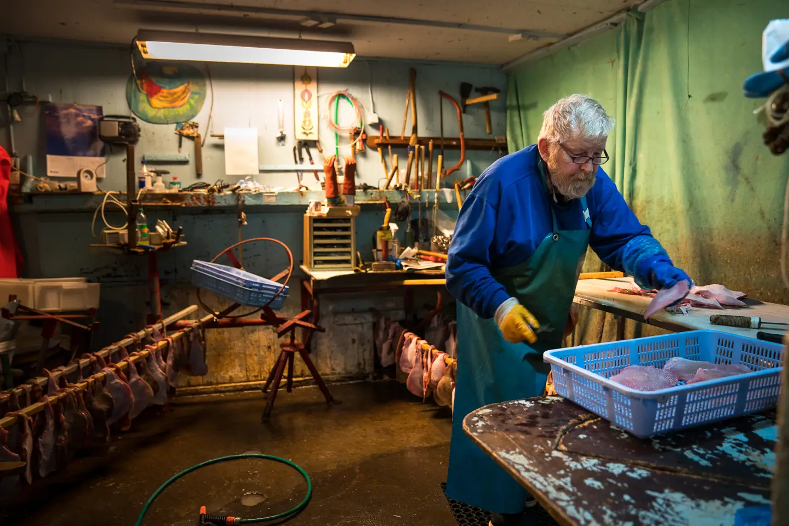
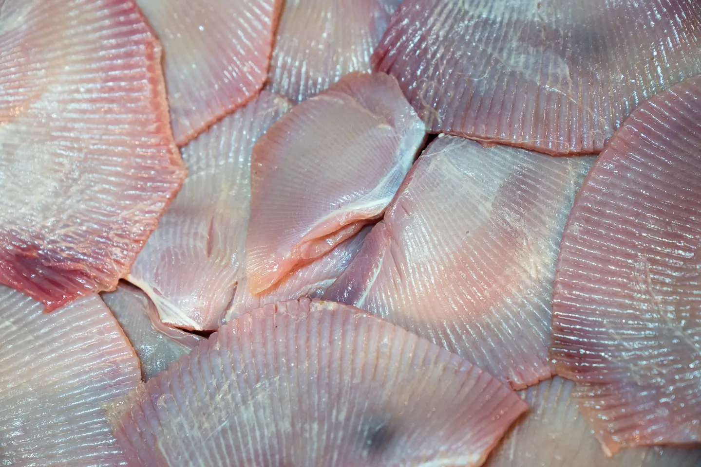
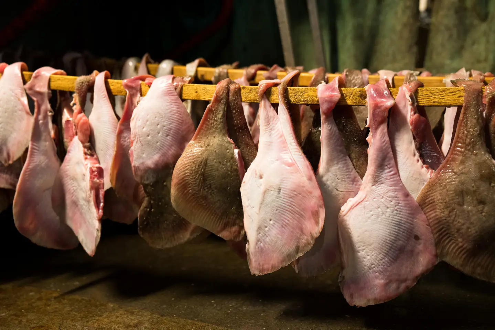
ㄹㅇ 홍어다
Kæst skata 캐스트 스카타(삭힌 홍어)라고 부른다.
가톨릭 교회는 성탄 전 대림절 동안 육고기 먹는걸 금했는데, 교회 전례력에서는 12월 23일이 금식의 마지막 날이었다.
그래서 육고기 대신 생선을 먹었는데 그 중 겨울에 잡히는 홍어가 그 역할을 맡게 됐다고 한다.
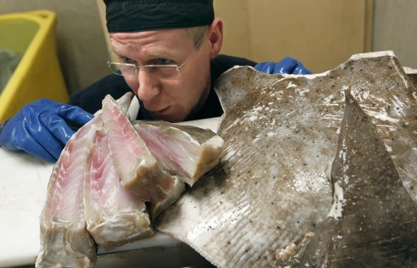
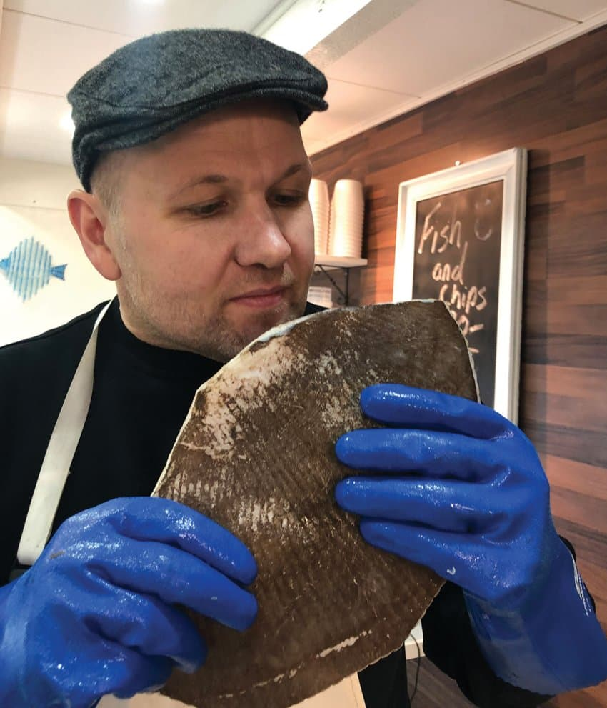
음 홍어 스멜
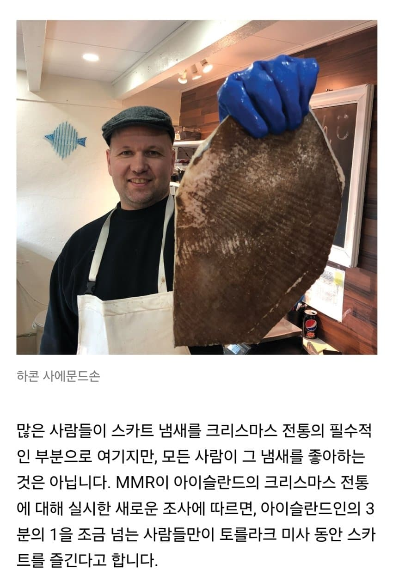
이것이 우리 홍어여
아이슬란드 사람 3분의 1 정도만 삭힌 홍어를 즐긴다고 한다.
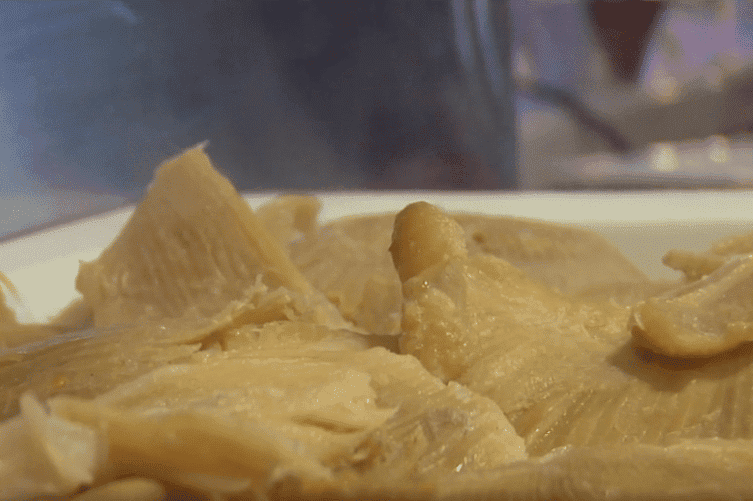
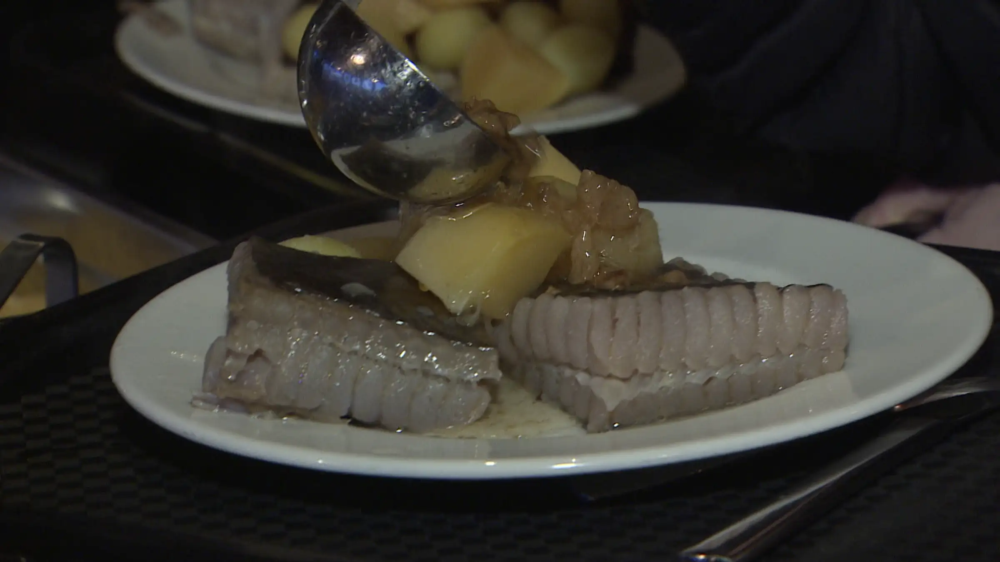
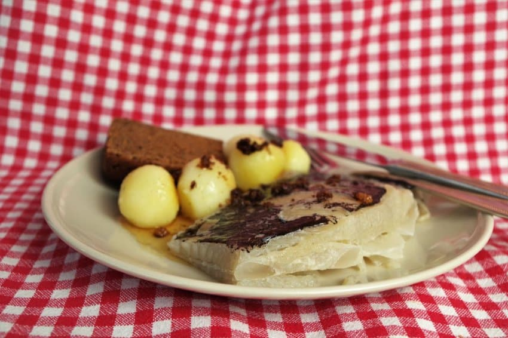
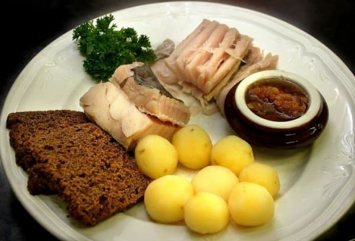
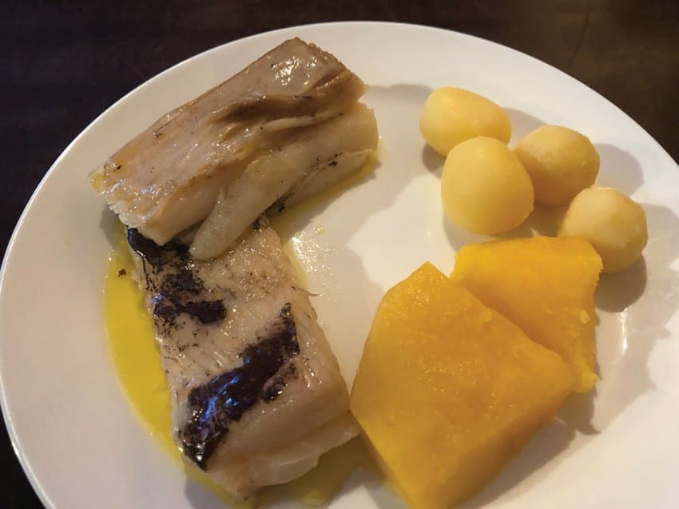
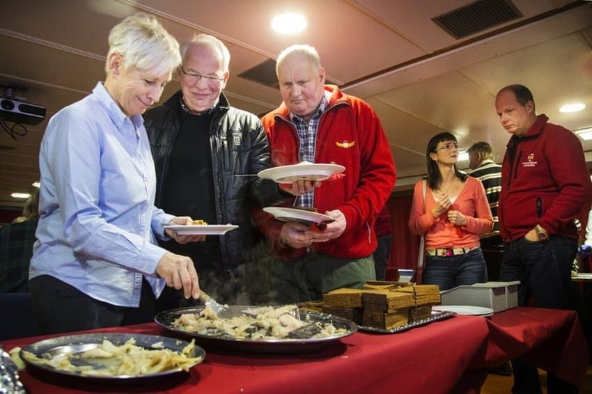
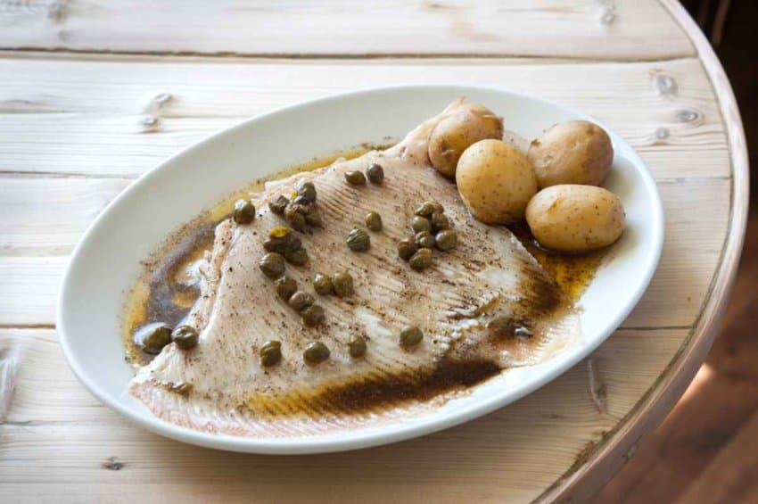
일년에 한번 먹는 특식(?) 느낌으로 주로 삶아서 먹는데
삶은 감자, 순무, 아이슬란드식 검은 호밀빵(뤼그브레이드), 그리고 녹인 양 기름(함사톨그)을 곁들여 먹는다.
아이슬란드 사람들도 지구상에서 단 두 국가... 한국과 아이슬란드에서만 홍어를 삭혀 먹는걸 알고 있다고 한다.

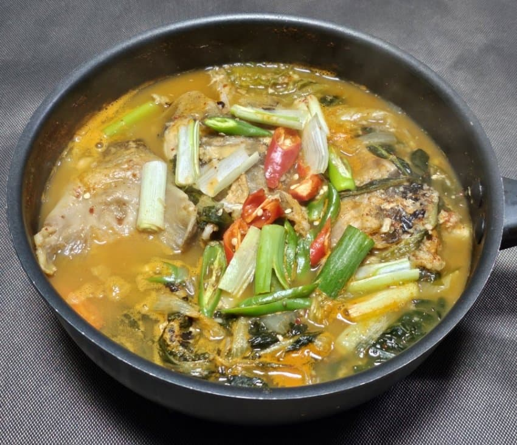
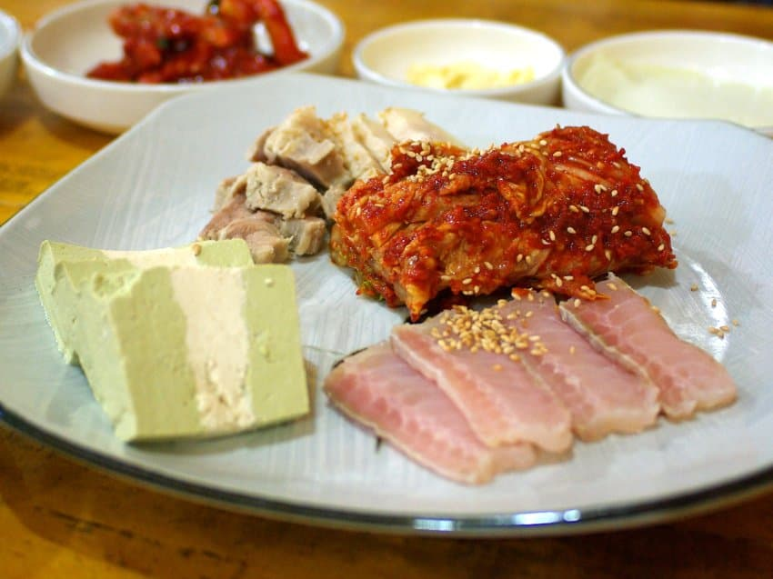
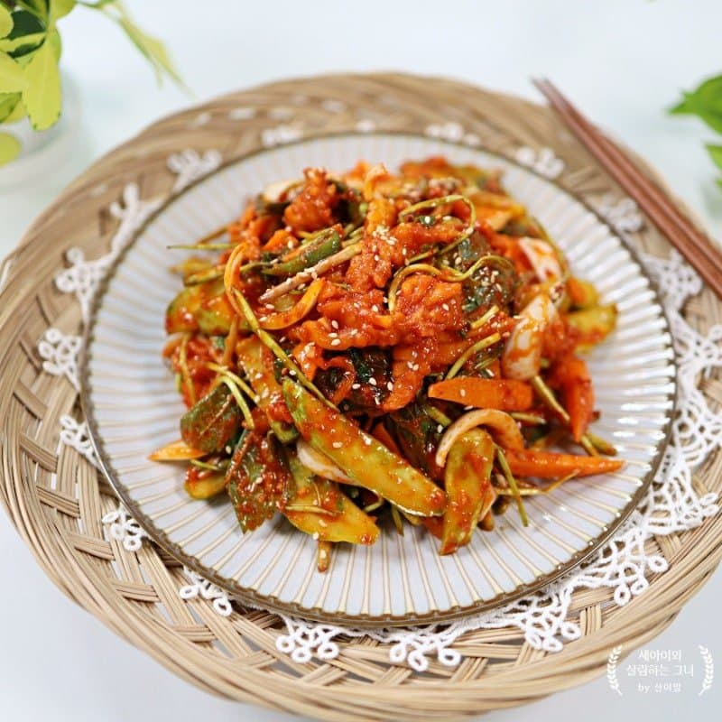
그래도 한국식 홍어가 나은듯...
그냥 삶기만 하는건 좀
댓글
댓글 보관 대기 중입니다. 원문 응답 오류가 있으면 다음 실행에서 다시 수집합니다.